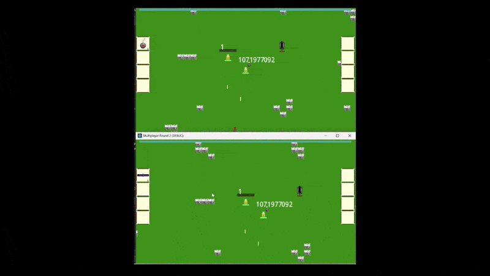
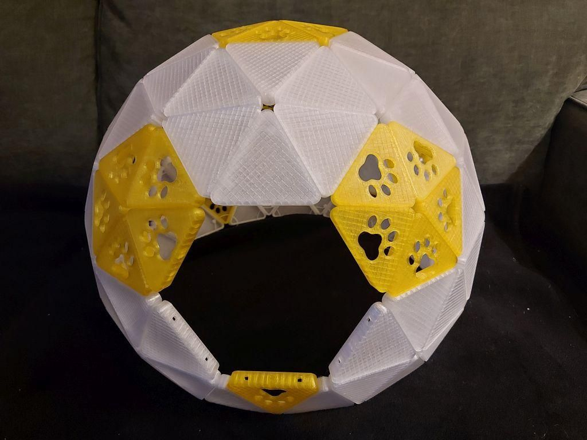
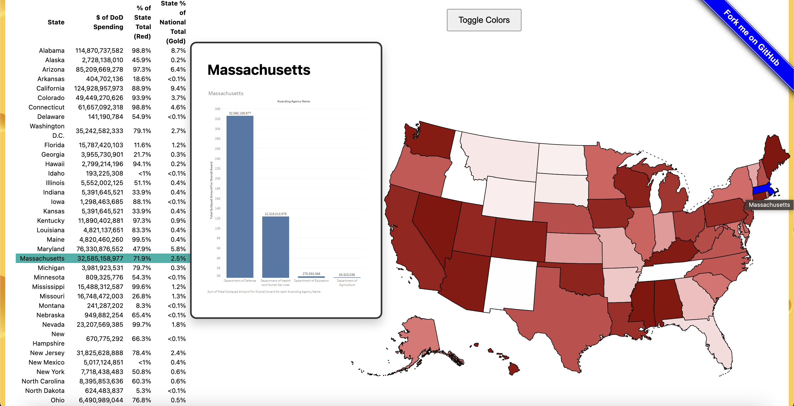
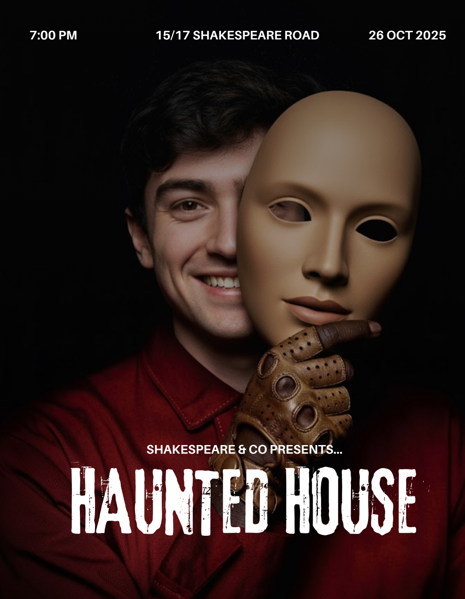
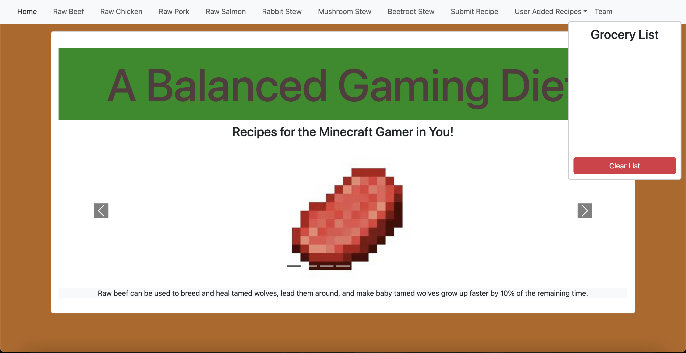

Computer Science Graduate | Aspiring Software Engineer | Game Developer
I'm a Computer Science graduate from Brandeis University (Class of 2026) with a passion for game development and software engineering. In my personal time, I'm designing and developing a roguelike multiplayer video game, demonstrating my expertise in game mechanics and programming.
I currently work as a CAD/CAM Technician at Concord Dental Lab, where I operate 3D printing and milling machines, perform equipment maintenance, and use 3Shape to verify model designs before production. Previously, I was a Gameplay QA Intern at Castix LLC and a dedicated varsity athlete at Brandeis, where I developed strong teamwork, communication, and time management skills.
I thrive in collaborative environments and enjoy turning complex problems into elegant, functional solutions that's through code, hardware, or hands-on production work. When I'm not working, you'll find me playtesting games, exploring new technologies, or working on personal projects that push my technical abilities. I also stay active by going to the gym, running, biking, and swimming.
I'm looking for an entry-level software developer position where I can contribute my skills and continue to grow professionally.
A roguelike multiplayer video game featuring a dynamic leveling system, diverse spell trees, and interactive items. Built from scratch to demonstrate expertise in game mechanics, multiplayer networking, and player progression systems.

View Game Project GitHub PageEmbedded systems project creating an intelligent cat monitoring system with environmental sensors, motion detection, and real-time data collection. Features automated alerts, health tracking, and smart home integration for pet care.

View Catopia Project GitHub PageInteractive data visualization analyzing Department of Defense spending using a U.S. state map to display the top 4 government spending categories. Features linked interactions between map and data table.

View Data Visualization Project GitHub PageDirected the project management lifecycle of a haunted house production from initial planning to execution. Led a team of 11-15 members in 2024 and 2025 with comprehensive documentation and media.

View Haunted House ProjectRecipe website for Minecraft food items with step-by-step instructions, grocery lists, and custom recipe pages. Built using Agile methodologies with containerized deployment.

GitHub PageBachelor of Science Computer Science | May 2026
GPA: 3.56 | Minor in Mathematics
Relevant Coursework: Multivariable Calculus, Data Structures and the Fundamentals of Computing, Linear Algebra, Discrete Structures, Information Visualization, Natural Language Processing (NLP), Intro to Machine Learning, Computer Security, Operating Systems, Applied Mathematics, Theory of Computation, Databases, Embedded Systems.
CAD/CAM Technician | June 2026 - Present
Operate 3D printers and milling machines to produce dental models from CAD/CAM team designs. Use 3Shape and nesting/composer software to verify model specifications and identify correct print/mill jobs. Perform routine maintenance on production equipment to ensure consistent output quality.
Gameplay QA Intern | Sept 2025 - Dec 2025
Playtested levels and maps to identify bugs, balance issues, and opportunities for improving gameplay and player experience. Logged and categorized issues in internal bug tracking systems, following company reporting guidelines.
Men's Cross Country, Indoor and Outdoor Track and Field | Brandeis University, Waltham, MA
August 2022 - May 2026
Balanced a 14+ hours practice, training, competition, and travel schedule, at NCAA Division III level attaining 5 times UAA All-Academic Recognition. Continue to stay active through regular training and workouts.
Email: adamrieden@outlook.com
Phone: 978-302-2123
GitHub: github.com/AdamRieden
LinkedIn: linkedin.com/in/adam-rieden
Location: Littleton, MA